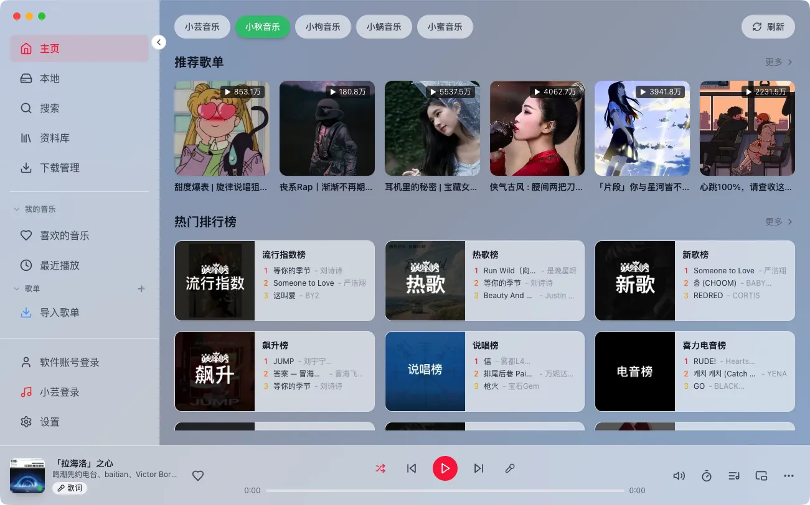
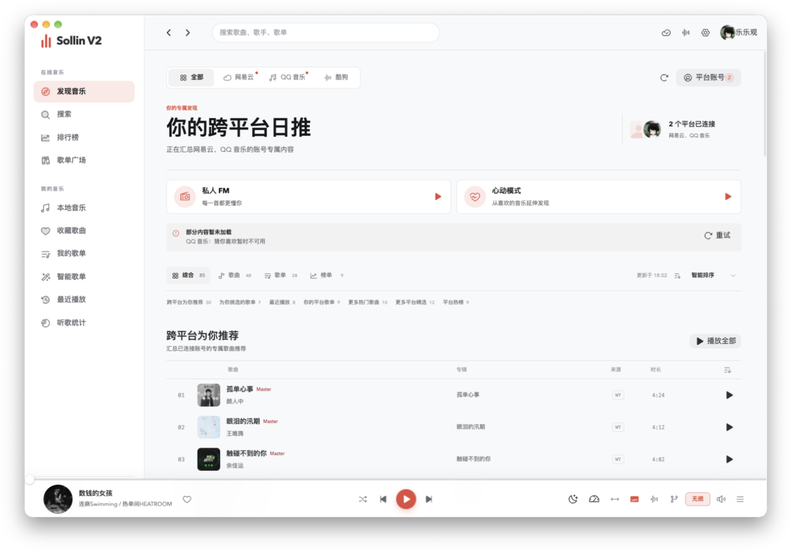
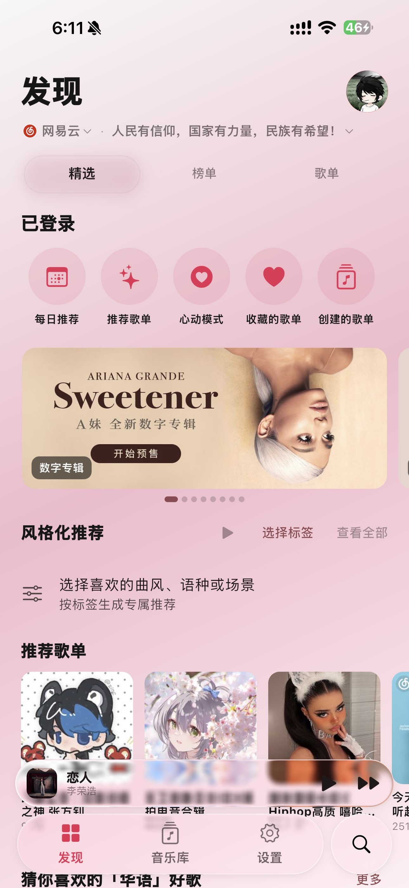
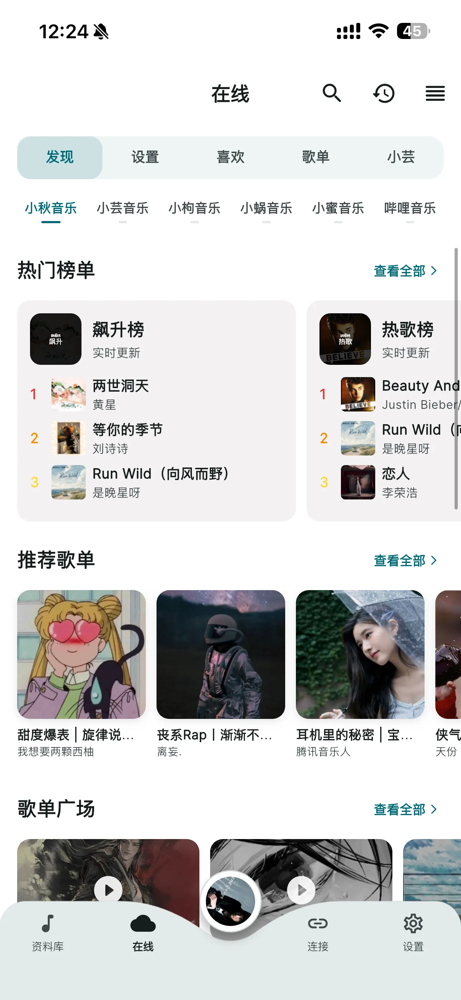

真实界面截图，所见即所得

以下截图来自开源 v1（v1.3.x）；全新 v2 界面请切换至「v2 全新版」查看。

跨平台日推汇总，私人 FM、心动模式与多平台推荐一屏直达。

发现页 · v2
全新视觉重构，平台切换、每日推荐、心动模式与风格化推荐一屏直达。

在线界面 · v1
多平台音源在线浏览，发现页、榜单与歌单一屏直达。
为听歌这件事，做到极致
从在线发现到本地收藏，从歌词表达到音质调校，SollinPlayer 覆盖完整的音乐工作流。
多种播放界面随心换
AM 高级版、素雅风、微信聊天、全屏黑胶、沉浸式等多种样式；桌面端另有 Apple Music 界面与迷你模式，动画细腻。
逐字歌词与深度自定义
支持 TTML 逐字歌词、罗马音与翻译，字号、颜色、对齐、间距自由调整；自动跨平台匹配最优歌词，桌面歌词全平台可定制。
EQ 均衡器与音效系统
移动端 v2 内置 10 频段均衡器，可拖曲线调音，5 种预设并保存自定义方案；桌面端另有混响、环绕、播放速率与音频可视化。
下载与本地资料库
自定义下载命名规则、标签编辑器、本地歌单与重复歌曲清理；支持 WebDAV、Navidrome / Emby 连接与音源批量导入。
在线内容与智能换源
推荐歌单、排行榜、每日推荐、热门歌手、专辑与评论一应俱全；智能超级换源支持自定义策略与顺序，失效歌曲自动匹配。
五端覆盖与数据互通
Android、iOS、鸿蒙、Windows、macOS 全平台可用；云备份让 v1 / v2 歌单、收藏与设置平滑迁移，多设备实时同步。
免费下载，全平台可用
移动端推荐下载全新 v2；电脑端 v2 闭源持续更新，v1.3.2 已在 GitHub 完全开源。
支持 Windows 10 / 11，x64 与 ARM64
- · 代码完全开源，发布于 2026-06-09
- · 移除账号后端，可自行编译审计
Universal 版本，适配 Apple Silicon 与 Intel
- · 代码完全开源，发布于 2026-06-09
- · 移除账号后端，可自行编译审计
非 App Store 应用，需自签安装
- · 推荐使用 LiveContainer 自签
- · 与 Android 版功能同步更新
鸿蒙原生 .hap 安装包，需侧载安装
- · 与 Android / iOS 同步发布
- · 功能与 v2 移动端保持一致
安装时需在系统设置中允许
第三方应用侧载
适配 Android 手机与平板
- · v1 最终稳定版，仍可正常使用
- · v1 / v2 云备份数据互通
非 App Store 应用，需自签安装
- · v1 最终稳定版，仍可正常使用
- · 推荐使用 LiveContainer 自签
鸿蒙端（HarmonyOS）仅提供 v2 版本，请切换到 v2 下载。
更新日志
- [新增] EQ 均衡器：10 频段可拖曲线调音，内置 5 种预设，支持保存自定义预设。
- [新增] 动态歌曲封面，在线歌曲优先匹配网易云动态封面。
- [新增] 「本地」独立为一级页面，iOS 支持扫描已下载歌曲。
- [增强] TTML 逐字高亮、背景人声独立成行、本地歌词自动识别编码。
- [新增] 播放解析链路查看、封面下载尺寸与命名设置、启动直接进入播放界面。
- [适配] 横屏 / 平板改用左侧菜单布局，迷你播放器常驻菜单区。
- [修复] 播放界面布局、悬浮球初始位置、随机播放「添加下一首」等问题。
- [新增] v1 / v2 数据互通云备份，升级 v2 无负担。
- [修复] QQ 搜索歌曲失效、平板菜单栏偶发显示错误内容。
- [优化] 用户头像统一通过绑定 QQ 解析，用户中心展示 UID 与 QQ。
- [新增] 本地歌曲上传 WebDAV、悬浮歌词逐字与罗马音翻译渲染。
- [新增] 本地重复歌曲一键清理（自动保留音质最好版本）、在线收藏一键去重。
- [修复] 随机播放乱跳、AM 高级版逐字歌词重影、缓存命中、原始界面卡顿等问题。
电脑端 v2 · 闭源持续更新
桌面端 v2 以闭源方式分发，更新说明随安装包发布；安装后可在软件顶栏查看当前版本号。开源 v1.3.2 及更早版本的完整更新记录请切换到 v1 查看。
- [变更] 移除软件账号后端，软件代码完全开源。
- [恢复] 小云自建歌单和收藏歌单回归。
- [新增] 顶栏版本号显示、桌面歌词锁定、macOS 菜单栏歌词与悬浮歌词独立设置。
- [新增] 歌曲播放链接预加载（1–3 首）。
- [修复] 音量调整问题，新增鼠标滚轮调整音量。
- [修复] 歌手专辑显示不全及其他已知问题。
- [新增] 全新顶栏布局、Apple Music 播放界面（设置 → 外观）。
- [新增] lx 数据备份，支持多设备实时同步歌单数据。
- [优化] 重写桌面歌词，修复 QQ 音乐歌词问题，整体性能提升。
- [新增] 智能超级换源，支持高自由度自定义换源规则。
- [新增] 软件背景支持纯色、渐变与自定义图片。
- [优化] 下载管理支持删除与一键停止任务，修复多项致命问题。
常见问题
iOS 怎么安装？为什么 App Store 搜不到？
鸿蒙端如何安装？
.hap 安装包，需通过侧载方式安装：下载后打开文件，按系统提示在设置中允许第三方应用侧载即可。v2 和 v1 有什么区别？升级后数据会丢吗？
电脑端 v2 为什么不开源？
软件提供音源吗？使用是否合规？
软件本身不含任何受版权保护的第三方内容，仅为技术框架；在线功能接口均来自 GitHub 等开源社区的公开项目（包括 lx-music-desktop、api-enhanced 等），开发者不参与任何音源文件的分发与制作。
本软件仅供学习与研究使用，请在下载后 24 小时内删除，并支持正版音乐。因不当使用产生的法律责任由用户自行承担。